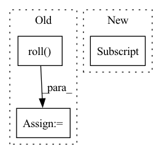

Pattern ID :2206
Before Change
dataset = self.env.get_dataset()
N = dataset["rewards"].shape[0]
obs = dataset["observations"]
next_obs = np.roll( obs, -1, axis=0)
dataset_out = {"states": torch.as_tensor(obs[:-1], dtype=torch.float32),
"actions": torch.as_tensor(dataset["actions"][:-1], dtype=torch.float32),
"rewards": torch.as_tensor(dataset["rewards"][:-1], dtype=torch.float32),
After Change
dataset_out = {"states": torch.as_tensor(dataset["observations"][:-1], dtype=torch.float32),
"actions": torch.as_tensor(dataset["actions"][:-1], dtype=torch.float32),
"rewards": torch.as_tensor(dataset["rewards"][:-1], dtype=torch.float32),
"next_states": torch.as_tensor(dataset["observations"] [1:], dtype=torch.float32),
"terminals": torch.as_tensor(dataset["terminals"][:-1], dtype=torch.float32)}
// Postprocess
if size > 0 and size < N:
In pattern: SUPERPATTERN
Frequency: 4
Non-data size: 3
Instances Fragment ID: 9333711
Project Name: kaixhin/imitation-learning
Commit Name: 48793e91cc1823ba72c12c33980fc2ef8c79210c
Time: 2021-05-02
Author: design@kaixhin.com
File Name: environments.py
M Class Name: D4RLEnv
N Class Name: D4RLEnv
M Method Name: get_dataset(3)
N Method Name: get_dataset(3)
M Parent Class:
N Parent Class:
M File Name: environments.py
N File Name: environments.py
M Start Line: 85
M End Line: 92
N Start Line: 85
N End Line: 90
Before Change
bboxes = augmentations["bboxes"]
if len(bboxes) > 0:
bboxes = torch.tensor(bboxes).roll(dims=1, shifts=1)
//yolo_xywh = coco_to_yolo_tensors(bboxes[..., 1:5], w0=tg_width, h0=tg_height)
//bboxes[..., 1:] = yolo_xywh
out_bboxes = torch.zeros((bboxes.shape[0], 6))
out_bboxes[..., 1:] = bboxesAfter Change
labels[:, 1:] = xywhn2xyxy(labels[:, 1:], ratio[0] * sw, ratio[1] * sh, padw=pad[0], padh=pad[1])
nl = len(labels)
if nl:
labels[:, 1:5] = xyxy2xywhn(labels[:, 1:5], w=img.shape[1], h=img.shape[0], clip=True, eps=1E-3)
// img = resize_image(img, (int(tg_width), int(tg_height)))
// bboxes = rescale_bboxes(bboxes, [sw, sh], [tg_width, tg_height]) Fragment ID: 9333708
Project Name: alessandromondin/yolov5m
Commit Name: 67592bd2ca15b093b59ddd4a11287df9c55f48d0
Time: 2022-11-21
Author: alessandromondin00@gmail.com
File Name: dataset_ultra.py
M Class Name: MS_COCO_2017
N Class Name: MS_COCO_2017
M Method Name: __getitem__(2)
N Method Name: __getitem__(2)
M Parent Class: Dataset
N Parent Class: Dataset
M File Name: dataset_ultra.py
N File Name: dataset_ultra.py
M Start Line: 85
M End Line: 122
N Start Line: 87
N End Line: 133
Before Change
if self.axis != 0:
raise RuntimeError("Depth first means the depth axis should be 0.")
// in here we assume the depth dimension was in the last dimension of "original_shape"
original_shape = np.roll( original_shape, 1)
factor = np.array(current_shape) / original_shape
// Creating guidance for all clicksAfter Change
// Assume channel is first and depth is last CHWD
original_shape = d[meta_dict_key]["spatial_shape"]
current_shape = list(d[self.ref_image].shape)[1:]
// in here we assume the depth dimension is in the last dimension of "original_shape" and "current_shape"
factor = np.array(current_shape) / original_shape
Fragment ID: 9333724
Project Name: project-monai/monailabel
Commit Name: 6ad3aaad098238115cba1e65df6726ca19a4e474
Time: 2021-11-11
Author: diazandr3s@gmail.com
File Name: monailabel/deepedit/multilabel/transforms.py
M Class Name: AddGuidanceFromPointsCustomd
N Class Name: AddGuidanceFromPointsCustomd
M Method Name: __call__(2)
N Method Name: __call__(2)
M Parent Class: Transform
N Parent Class: Transform
M File Name: monailabel/deepedit/multilabel/transforms.py
N File Name: monailabel/deepedit/multilabel/transforms.py
M Start Line: 747
M End Line: 766
N Start Line: 738
N End Line: 738
Before Change
all_lengths = torch.linspace(near, far - resolution, point_num).to(target_device)
lengths = all_lengths + torch.rand((ray_num, point_num)).to(target_device) * resolution
// sampled coords is (row_id, col_id)
ray_raw = ((sampled_coords[..., :-1] * torch.Tensor([-1., 1.]).to(target_device)).roll(shifts = 1, dims = 1) + torch.Tensor([-w / 2, h / 2]).to(target_device)) / focal
ray_raw = torch.sum(torch.cat([ray_raw, -torch.ones(ray_raw.shape[0], 1, dtype = torch.float32).to(target_device)], dim = -1).unsqueeze(-2) * cam_tfs[..., :-1], dim = -1)
// return shape (ray_num, point_num, 3), (ray_num, point_num), rgb(ray_num, rgb), cams(ray_num, ray_dir, ray_t)
pts = cam_tfs[:, :, -1].unsqueeze(-2) + lengths[:, :, None] * ray_raw[:, None, :]After Change
// return shape (ray_num, point_num, 3), (ray_num, point_num), rgb(ray_num, rgb), cams(ray_num, ray_dir, ray_t)
pts = cam_tf[:, -1] + ray_raw[:, None, :] * lengths[:, :, None]
// ray_raw is of shape (ray_num, 3)
return torch.cat((pts, ray_raw.unsqueeze(-2).repeat(1, point_num, 1)), dim = -1), lengths, output_rgb, torch.cat((cam_tf[:, -1].unsqueeze(0).repeat(ray_raw.shape[0] , 1), ray_raw), dim = -1)
def fov2Focal(fov:float, img_width:float) -> float:
return .5 * img_width / np.tan(.5 * fov) Fragment ID: 9333706
Project Name: enigmatisms/nerf
Commit Name: 926e53d582b75b6d41aa6ffb38432e21706adc6f
Time: 2022-04-14
Author: 984041003@qq.com
File Name: py/utils.py
M Class Name: AnonimousClass
N Class Name: AnonimousClass
M Method Name: validSampler(10)
N Method Name: validSampler(10)
M Parent Class:
N Parent Class:
M File Name: py/utils.py
N File Name: py/utils.py
M Start Line: 73
M End Line: 89
N Start Line: 109
N End Line: 118